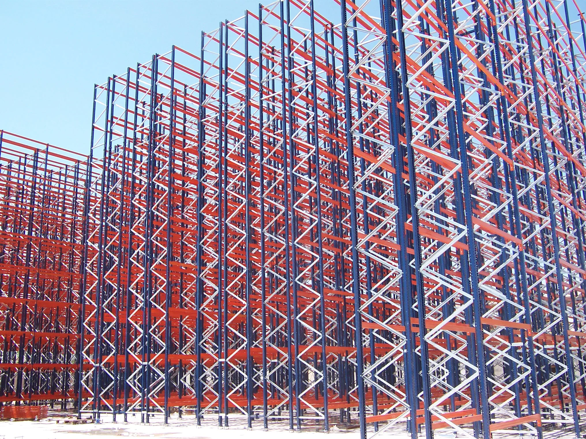
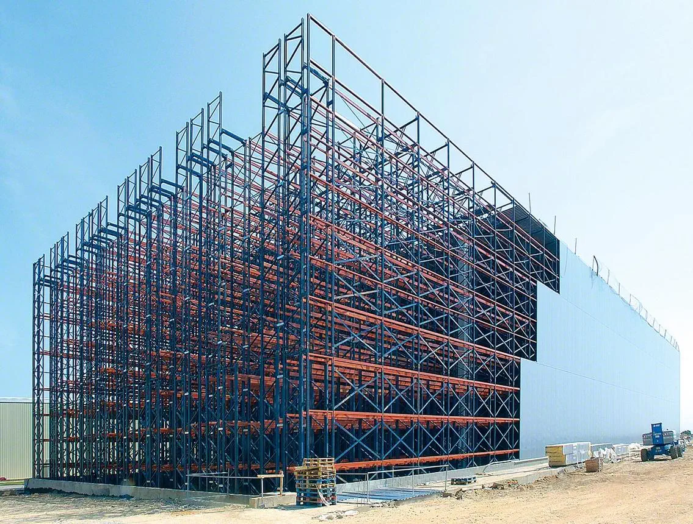
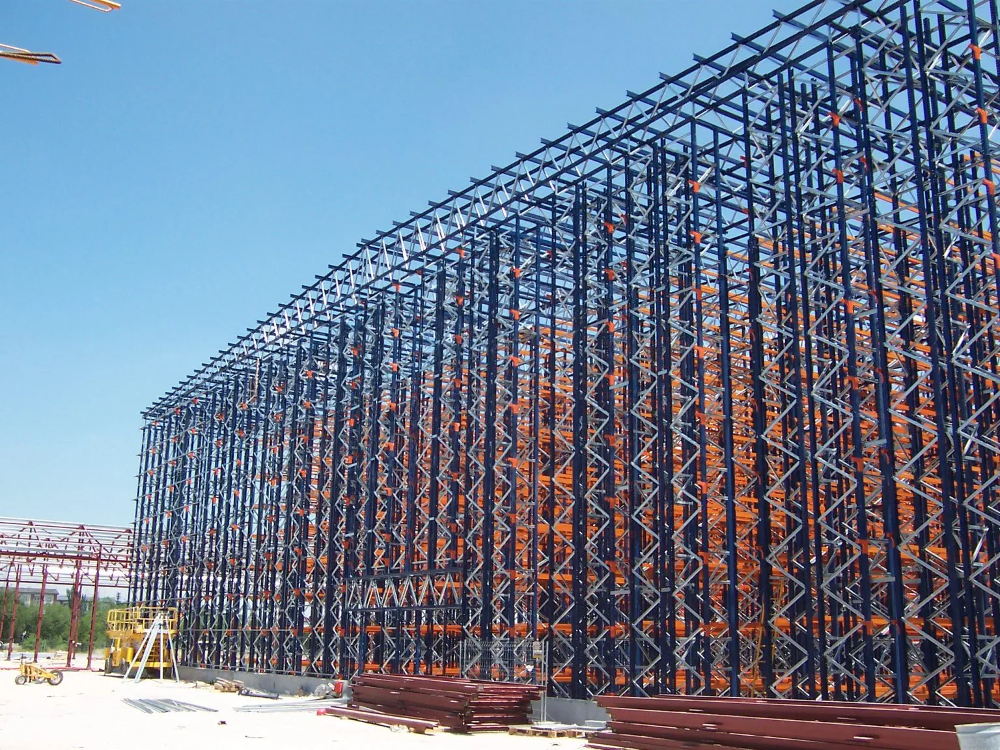
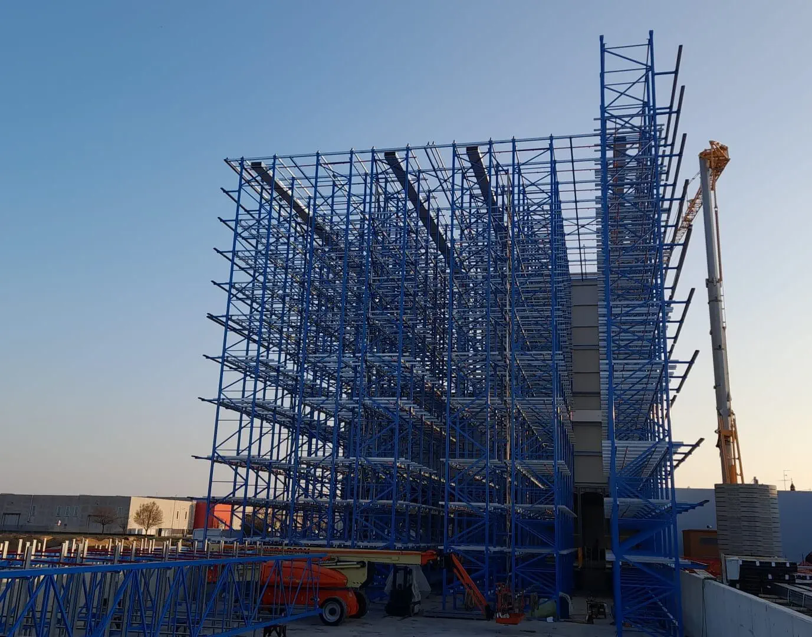
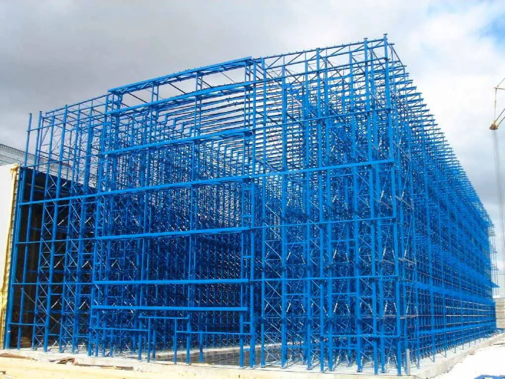
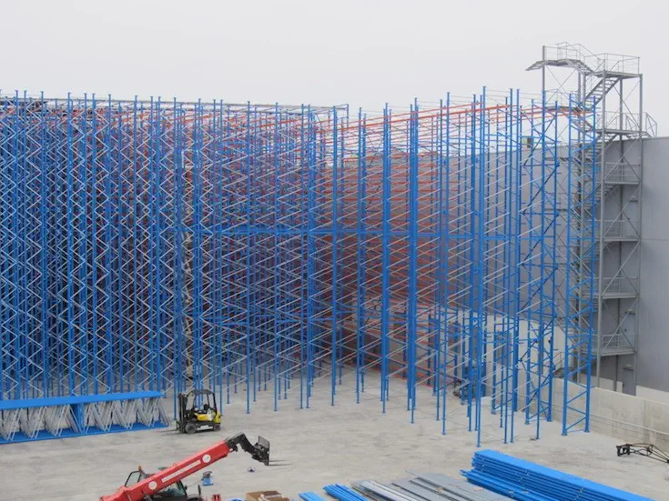
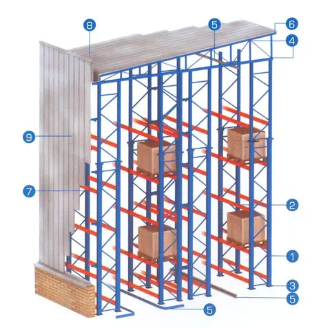

Самоносещи складовеSelf Supported Warehouse
Самоносещи складове за високоплътностно складиране и автоматизирани логистични системи
Самоносещите складове представляват високотехнологично решение, при което стелажната система изпълнява ролята на основна носеща конструкция на цялата сграда. Вместо да се изгражда отделна конструкция от колони и греди, върху която впоследствие да се монтират стелажи, тук самите стелажи поемат всички натоварвания – както от съхраняваните стоки, така и от външни фактори като вятър, сняг и сеизмични въздействия. Това ги прави едно от най-ефективните решения в съвременната логистика.
Този тип складове се отличават с възможността да достигат значителни височини, често над 30–40 метра, което позволява оптимално използване на наличната площ. Липсата на вътрешни колони дава възможност за максимално оползотворяване на пространството и създава условия за висока плътност на складиране. Това е особено важно за компании с ограничени терени, но с големи изисквания към капацитета.
Самоносещите складове често се комбинират с автоматизирани системи за управление на стоките, което ги прави идеално решение за модерни логистични центрове. Благодарение на интегрирания си дизайн, те позволяват изграждането на напълно автоматизирани складови системи, които повишават ефективността и намаляват човешкия фактор.

Едно от най-големите предимства на този тип складове е значителното намаляване на строителните разходи. Тъй като не е необходима отделна носеща конструкция, се използват по-малко материали и се съкращава времето за изграждане. Това води до по-бърза възвръщаемост на инвестицията и по-нисък общ бюджет за проекта.
Друго съществено предимство е максималното използване на пространството. Благодарение на високата конструкция и липсата на вътрешни прегради, се постига много по-голям капацитет в сравнение със стандартните складове. Това позволява съхранение на големи количества стока на сравнително малка площ, което е критично за индустрии с голям оборот.
Самоносещите складове също така са изключително подходящи за автоматизация. Те могат лесно да бъдат интегрирани със складови кранове, shuttle системи и транспортни линии. Това позволява бързо и точно управление на стоките, намаляване на грешките и значително повишаване на производителността.

Самоносещите складове могат да бъдат проектирани за работа с мотокари, което ги прави по-достъпно решение за компании, които не изискват пълна автоматизация. При този вариант се запазва високата плътност на складиране, но управлението на стоките се извършва от оператори.
Друг основен тип са автоматизираните складове, които използват AS/RS системи. Те включват складови кранове и напълно автоматизирани процеси за складиране и извличане на палети. Това решение е подходящо за големи логистични центрове, където се изисква висока скорост и прецизност.
Съществуват и специализирани самостоятелно носещи складове за хладилни и фризерни условия. Те са особено ефективни, тъй като компактната конструкция намалява обема на охлажданото пространство и води до значителни икономии на енергия.

Основната разлика между самостоятелно носещите складове и стандартните складове е в конструктивния подход. При традиционните сгради първо се изгражда носеща конструкция, след което се инсталират стелажите. При самоносещите складове тези две функции са обединени, което води до по-ефективно използване на ресурсите.
Освен това самостоятелно носещите складове позволяват значително по-голяма височина и капацитет. Това ги прави по-подходящи за компании, които работят с големи обеми стоки и се нуждаят от компактно, но високоефективно решение.
В дългосрочен план този тип складове предлагат по-добра възвръщаемост на инвестицията, благодарение на по-ниските експлоатационни разходи, възможностите за автоматизация и по-високата ефективност на складовите операции.

Самоносещият склад е отличен избор, когато наличната площ е ограничена, но има нужда от максимален капацитет за съхранение. Височинното развитие на склада позволява да се компенсира липсата на хоризонтално пространство и да се постигне висока ефективност.
Това решение е особено подходящо за компании с интензивни логистични процеси и голям оборот на стоки. Възможността за интеграция с автоматизирани системи позволява значително ускоряване на операциите и намаляване на разходите за труд.
Самоносещите складове са предпочитани и при изграждането на модерни индустриални и дистрибуционни центрове, където се търси комбинация от висока ефективност, бързо изграждане и дългосрочна устойчивост.

Основният елемент на самостоятелно носещия склад е стелажната конструкция, която изпълнява двойна функция – съхранява стоките и едновременно с това носи цялата сграда. Тя е проектирана да издържа на високи натоварвания и да осигурява стабилност при различни климатични условия. Използват се високоякостни стомани и прецизно инженерно изчисление.
Към конструкцията се добавят покривни и фасадни панели, които се монтират директно върху стелажите. Те осигуряват защита от атмосферни влияния и създават затворено складово пространство. В зависимост от нуждите, могат да бъдат използвани различни изолационни материали, особено при хладилни складове.
Фундаментът също играе ключова роля, като трябва да поеме всички натоварвания от конструкцията и съхраняваните стоки. Освен това в системата се интегрират различни логистични технологии като автоматизирани кранове, транспортни системи и софтуер за управление, които осигуряват ефективна работа на склада.
